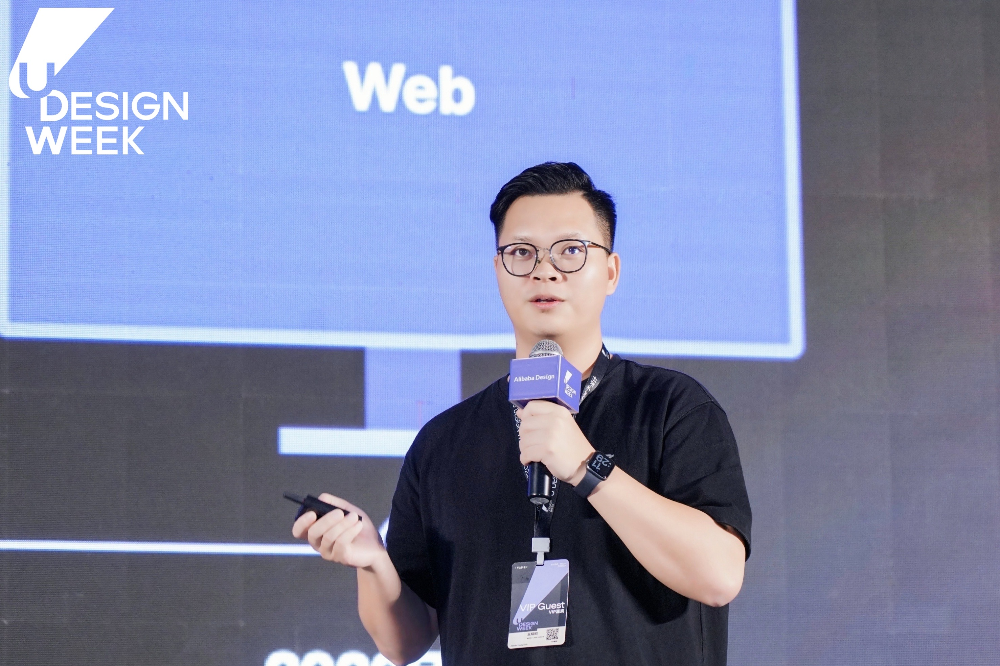
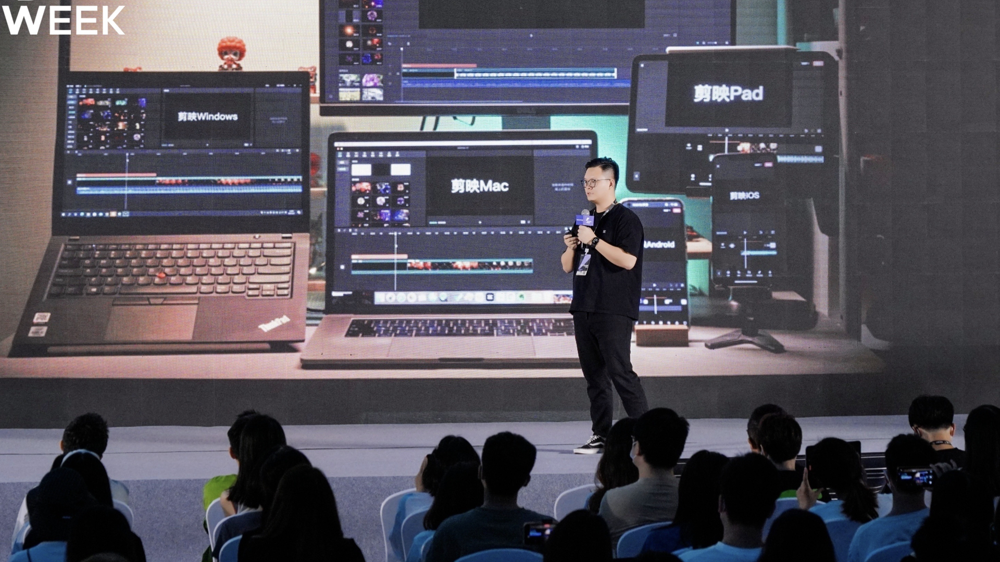

Product Design
理解用户与业务，把复杂问题转化为清晰、可用的产品系统。
ABOUT · VIBEBUBBLE STUDIO
Product Designer × AI Creator
在 AI 时代保持探索，寻找个人的第二成长曲线

WHO I AM
FROM PRODUCT DESIGN TO AI-NATIVE CREATION
我拥有 10 年+ To C 产品设计经验，参与过腾讯社交产品，与字节全球化视频创作工具，带领设计团队服务千万级用户的产品。现在，我把产品思维、设计体验、创作者视角与 AI 能力放进同一个工作流，探索新的可能。
理解用户与业务，把复杂问题转化为清晰、可用的产品系统。
借助 AI 快速把想法做成可运行、可验证、可持续迭代的产品。
用新模型、新工具与新媒介，寻找设计和创造的下一种可能。
EXPERIENCE
从设计产品，到设计系统，走向海外，深入 AI，再到建立自己的创造方式。

2016.07—2020.02
Senior Interaction Designer
在社交与内容产品设计中，建立产品判断、增长意识与设计驱动业务的工作方式。
2020.02—2022.12
Product Design Lead
作为早期设计成员与工具线设计 Leader，负责剪映高阶剪辑能力设计，从0到1负责剪映专业版的设计。
2023.01—2023.12
Product Design Expert
海外社区产品创作工具，提升对海外产品和用户的设计认知，规范化团队协作流程及设计组件。
2024—2026
Senior AI Engineer
推进垂直领域AI大模型，结合各种业务场景更好的落地，提供完整的解决方案。
2026—NOW
Product Designer × AI Creator
探索一个人如何借助 AI，把洞察、设计、代码与内容连接成可运行的真实产品。
FEATURED WORK
Jianying / CapCut · FLAGSHIP CREATION PRODUCT
剪映是我职业生涯中最重要的产品。它让我有机会把兴趣和工作相结合，获得从一个功能、一块屏幕，走向多端系统、全球市场与 AI 创作的完整视角。
STAY CURIOUS · KEEP EXPLORING
我持续体验新的硬件、模型与媒介，也用影像记录家人、旅行和不断出现的灵感。 好奇心不是兴趣清单，而是我理解世界、理解用户、保持创造力的方式。